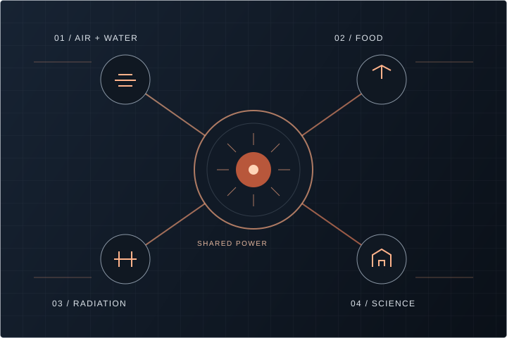

INDEPENDENT STUDENT PROJECT / SPACE APPS CHALLENGE 2026
Sol by
Sol.
Keep Mars alive, one power decision at a time. Guide a four-person crew through a 14-sol scenario shaped by real NASA data from Curiosity and space biology.
BROWSER SIMULATION LIVE · NO DOWNLOAD
GALE CRATER SCENARIO
MISSION PROFILE / MARS
Gale Crater
14 sols · 04 crew
SIMULATED SCENARIO / SOL 01
02THE CHALLENGE
A distant world.
No easy choices.
A Mars crew would face hard limits: supplies, energy, radiation and a long distance from Earth. A storm can complicate the plan, while communication delay makes timely decisions matter.
Sol by Sol models a small subset of those pressures. The playable scenario focuses on power allocation, resource levels and selected storm events; other challenges are real mission context, not mechanics in this build.
Explore the Space Apps challengeReal Mars missions involve many more challenges, including isolation and complex life-support operations. This game focuses on a small, simplified set of resource and power decisions.
03MISSION BRIEFING
MARS GAME SCENARIO / NOT A LIVE MISSION
YOUR OBJECTIVE
Bring the crew through
14 sols on Mars.
Balance the base's power between life support, the greenhouse, radiation shielding and rover trips for rock samples. The Mars scenario begins at Gale Crater with limited power and resources.
01 / DURATION14 solsOne mission scenario
02 / POWER10 unitsAvailable per sol in the scenario
03 / CREW04 peopleScenario crew size
Values describe the Mars game scenario; they are not live mission telemetry.
04MISSION CONTROL
Four systems.
One power budget.
These are the Mars scenario's starting values and rock sample target — a visual briefing, not a live game readout.
SCENARIO / 01·STARTING RESOURCES
STATIC GAME VALUES — NOT LIVE
Air & water
80 / 100
Food
80 / 100
Radiation dose
0 / 100
Rock samples
0 / 32 goal
START VALUES / Mars scenarioSample objective 32
05SURVIVAL SYSTEMS
THE SIMULATION'S FOUR ALLOCATIONS
Keep the base
in balance.
The scenario turns a complex mission into a focused power-allocation challenge. These are simplified game rules, not engineering specifications for a real habitat.
Life support
Power allocation affects the scenario's air-and-water resource. The baseline upkeep is 3 units per sol.
Greenhouse
The greenhouse allocation changes the food resource. Its scenario baseline is 2 power units per sol.
Radiation shield
During a solar storm, shield allocation reduces the extra storm dose. The game caps that reduction at 75%.
Rover
An astronaut drives the rover out for rock samples: one sample per power unit, sent to Earth by rocket. Every trip adds a little dose, much more in a solar storm.
Weather Station
An optional scenario decision: it uses 1 power unit per sol and can provide a storm warning one sol ahead.
Resource and dose values are game abstractions. They do not represent live conditions or direct real-world operating limits.
06FLIGHT PLAN
A sol at
a time.
The documented game loop moves from conditions to allocation, simulation and a review of the result.
- 01
Briefing
Review the sol's conditions, event notes and Commander message.
- 02
Allocate power
Share available power among life support, greenhouse, shield and the rover; decide whether to run the Weather Station.
- 03
Resolve the sol
The scenario applies the allocation and active event conditions to the resource state.
- 04
Debrief
Review the result and guidance, then continue or reach the mission outcome.
07DATA & SCIENCE
TRACEABLE SOURCES
Real measurements.
Made playable.
The project connects mission events and learning references to verified NASA source material, including Curiosity RAD radiation profiles, solar DONKI data and space biology studies.
Game values are thoughtfully simplified for an engaging junior astronaut experience, while faithfully reflecting real space environmental risks.
Curiosity RAD data from Gale Crater (OSDR RadLab) & 5 biological studies from NASA OSDR are integrated into gameplay and debriefs.
PROJECT SOURCES / HOW THEY RELATELOADING
Loading project data sources…
How real NASA data changes the game
Every hazard and trade-off in Sol by Sol is grounded in real space science and mission history.
Gale Crater radiation
NASA's Curiosity rover measured the major solar particle storm of 11–12 Sep 2017 right where our base stands. Daily radiation rose to 2.29× and 1.65× the quiet level, with a peak hour reaching 2.77×.
Real space weather (DONKI)
Our server checks recent solar eruptions via NASA's DONKI API. If the Sun is active, solar storms become more likely during your 14-sol mission.
Messages are slow
Radio signals take between 4 and 24 minutes to travel between Earth and Mars. A warning from Earth can arrive too late — unless you invest power in the local Weather Station.
Dust stops solar power
In 2018, a planet-encircling dust storm cut off sunlight from NASA's solar-powered Opportunity rover. In the game, a dust storm halves your power generation for that sol.
Real space biology (OSDR)
After each sol, a "Real Science" card shares an experiment from NASA's Open Science Data Repository: Moon soil plants (OSD-476), ISS lettuce (OSD-268), cosmic ray seeds (OSD-210), mice in orbit (OSD-342), and simulated Mars gravity (OSD-418).
Astronaut radiation limits
Real NASA astronauts have career radiation limits defined by NASA-STD-3001. In Sol by Sol, exceeding the safe radiation threshold triggers an emergency mission abort.
What we simplified for Junior Astronauts (Ages 7–12)
- Dose is in game points (0–100), not sieverts. Storm ratios are real; absolute numbers are calibrated so a 14-sol mission is balanced, fair and fun.
- The shield only stops solar storm radiation. Everyday background radiation on Mars is energetic galactic cosmic rays that passive shielding cannot stop. Solar storm particles have lower energy, so the shelter shield blocks them effectively.
- Rover trips are outside work. Every trip adds a little dose, and during a solar particle storm much more. Real sample return is planned to take years; in the game a rocket sends the samples home the same sol. Outside activity in a storm exposes astronauts to extra radiation — mirroring why real astronauts shelter in place.
- Guaranteed learning encounter. Every 14-sol mission experiences the real 2017 storm once, ensuring every student discovers how space weather affects habitats.
- Core systems represent full habitats. Life support, greenhouse, storm shield and rover stand for hundreds of life support subsystems.
- AI Commander stays faithful. Google Gemini translates exact telemetry into warm, accessible advice without making up dates or unverified numbers.
Verify it yourself: The script that processes Curiosity RAD data from the NASA OSDR RadLab API is open source in data-pipeline/fetch_radlab.py. All game scenario rules are in scenario_mars.json.
08AI COMMANDER
MEET COMMANDER NOVA
Science, translated
into mission guidance.
Commander Nova is the game's mission-guidance voice, designed to explain a briefing or sol result and offer a practical tip for kids aged 7–12. In the game, a FastAPI service on Render running Google Gemini turns current telemetry and NASA data into short, encouraging advice in English and Russian.
Use of AI (Super Intelligence) Disclosure: In-game Gemini responses are strictly constrained to the game's actual telemetry and NASA facts — it is instructed never to invent dates, data or statistics. If the backend is offline, rich pre-written fallbacks are used seamlessly. No personal data is collected or sent. AI tools (Claude) also assisted the team with code design and documentation.
09MISSION GAME CENTER
SOL BY SOL / MARS BASE TRAINER
Play the
mission.
Take command of a four-person crew at Gale Crater. Balance a limited power budget, respond to changing sol conditions and send 32 rock samples to Earth.
Go to launch console
DESKTOP & MOBILE BROWSER COMPATIBLE
MISSION STATUS Sol by Sol Game Live · HTML/JS + 3D
MISSION LENGTH14 sols
CREW04 astronauts
POWER BUDGET10 units / sol
Scenario parameters / not live mission data
MISSION INTERFACE / BROWSER 3D
Launch console
SOL BY SOL / MARS BASE TRAINER
SIMULATION ACTIVE
Playing on a phone or want full screen? Open Sol by Sol on its own page ↗
MISSION FILE / MARS SCENARIO
Briefing from
Gale Crater.
A focused survival-and-samples scenario. These are game objectives and simplified resource rules, not real mission operating specifications.
MISSION LOCATION
Gale Crater
Mars surface scenario
CREW 04 / DURATION 14 SOLS
MISSION OBJECTIVE / COMPLETE THE FINAL SOL
Keep air and food above zero, keep cumulative game dose below the scenario limit, and send 32 rock samples to Earth by sol 14.
01Air & foodStay above 0
02Crew doseBelow 100 game points
03Rock samplesSend 32 to Earth
The scenario ends early if air or food reaches zero, or the dose limit is reached. At sol 14, the sample target determines the outcome.
THE MISSION LOOP / FOUR STAGES
One sol.
Four decisions.
Follow the documented game loop from the morning briefing to the sol debrief.
-
01
Morning Briefing
Review the sol conditions, event notes and Commander message before choosing an allocation.
-
02
Share the Power
Allocate available power to life support, greenhouse, radiation shielding and the rover. The Weather Station is optional.
-
03
Watch the Sol
Resolve the turn and see how your choices and active scenario events affect the crew's resources.
-
04
Learn Why
Review the result and guidance in the debrief, then continue if the mission is still active.
POWER ALLOCATION / SIMPLIFIED GAME RULES
Four systems.
One shared budget.
Power choices affect the scenario's survival resources and rock samples. The model is simplified for gameplay.

SCENARIO POWER FLOW / NOT ENGINEERING SPECIFICATIONLife Support
Power allocation affects the air-and-water resource. Baseline upkeep: 3 units per sol.
Greenhouse
Allocation affects food. Baseline upkeep: 2 power units per sol.
Radiation Shield
During solar storms the shield reduces the extra dose, capped at 75% reduction.
Rover
Each power unit collects one rock sample toward the 32-sample goal; a rocket sends them to Earth.
MISSION SUCCESS CONDITIONS / SOL 14
Survive the scenario.
Send 32 rock samples to Earth.
Keep air and food above zero and cumulative dose below 100 game points through the final sol. The dose value is a game abstraction, not a real-world measurement.
10THE PEOPLE BEHIND THE MISSION
Team BeibitAI.
A collaborative project built for the NASA Space Apps Challenge.
- 01AdletCaptain, game logic, backend, AI and data
- 02ArystanLead engineer, gameplay systems
- 03OmarData pipeline, testing, gameplay recording
- 04Bexultan3D artist, habitat & module models
- 05MuhammadWebsite & deployment, UI design
- 06DariyaGame writing, demo & presentation